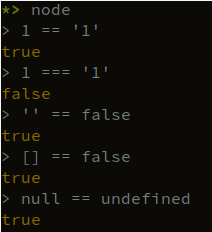
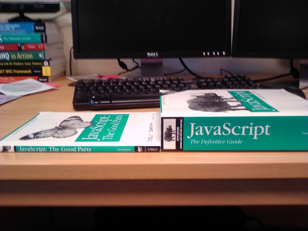

Paul Victor Raj @JUSPAY
???
???

In summary…

A pure functional (Haskell inspired) language
Compiles to JS
Easy javascript FFI
let apolloContext;
export function getApolloContext() {
if (!apolloContext) {
apolloContext = React.createContext({});
}
return apolloContext;
}
export function resetApolloContext() {
apolloContext = React.createContext({});
}export interface ApolloContextValue {
client?: ApolloClient<object>;
renderPromises?: Record<any, any>;
}
let apolloContext: React.Context<ApolloContextValue>;
export function getApolloContext() {
if (!apolloContext) {
apolloContext = React.createContext<ApolloContextValue>({});
}
return apolloContext;
}
export function resetApolloContext() {
apolloContext = React.createContext<ApolloContextValue>({});
}The only thing worse than being blind is having sight but no vision.
- Helen Keller
any can be a problem
unknown still doesn’t cut it rightSeparation of effect full code from others
A good friend will always stab you in the front
- Oscar Wilde
Change a huge class of runtime bugs into compile time errors
Better debugging
Better development cycles
Types are disjoint sets of values
No subtyping in the traditional sense (except with row polymorphism)
All functions are curried.
1 argument -> 1 argument
Partial Application for free
data Direction = N | S | E | W
data Coordinates = Coordinates { x :: Int, y :: Int }
-- Currying
move :: Direction -> Coordinates -> Coordinates
move N (Coordinates { x, y }) = Coordinates { x, y: y + 1 }
move S (Coordinates { x, y }) = Coordinates { x, y: y - 1 }
move E (Coordinates { x, y }) = Coordinates { x: x + 1, y }
move W (Coordinates { x, y }) = Coordinates { x: x - 1, y }I call it my billion-dollar mistake
- Tony Hoare
Just is a proof that there is indeed a value
and its safe to access the value without an exception
a -> bList a - Returns multiple a’sMaybe a - May not return an aTuple a b - Return an a with a payloadReader r a - Use a r to produce an aWriter w a - Produce an a, but log a wState s a - Produce an a, but use or update some state sParser a - Consume some input and return an aEffect a - Nondeterministically get an aAff a - An Effect ful callback which can consume an ado blocksdo ’em allbillPayFlow :: Flow BillPayFailure StatusScreenAction
billPayFlow = do
_ <- UI.splashScreen
operators <- Remote.fetchOperators
operator <- UI.chooseOperator operators
mobileNumber <- UI.askMobileNumber
amount <- UI.askAmount
result <- Remote.payBill mobileNumber amount operator
UI.billPayStatus mobileNumber amount resultpurescript-puxpurescript-thermitepurescript-halogenpurescript-reactpurescript-flarepurescript-specularpurescript-prestopurescript-virtual-domDSLs using Free Monads